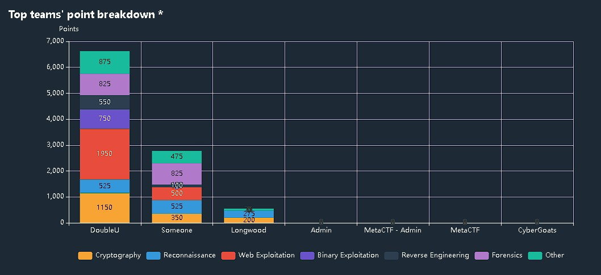
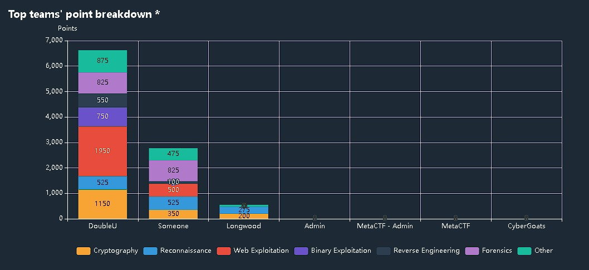

This CTF was hosted by the Longwood Cybersecurity Club hosted on the MetaCTF platform. I was stressed leading up to the time of the competition because I was out of the house and was able to compete from my laptop, which did not have a good battery. The competition also ended later that day, and I knew I needed to get home. However, I could not because I was at a party, which I could not leave. So I used my laptop to complete as many challenges as I could.
The positive thing about this competition was that the questions were similar to the questions from the Cyberforge competition I did earlier in the year. I was able to capture most of the flags for this reason. I was in a team with three other people, who were very knowledgeable on the topic of computers. They were able to complete other challenges while I was at the party. In the end, my team solved all the challenges and the organizers were shocked when we captured all of the flags.